Двенадцать экранов: от запуска до доставленного заказа. Тёмная тема, фирменный жёлтый и меню с фотографиями блюд. Структура повторяет привычное приложение Додо, стиль — свой.
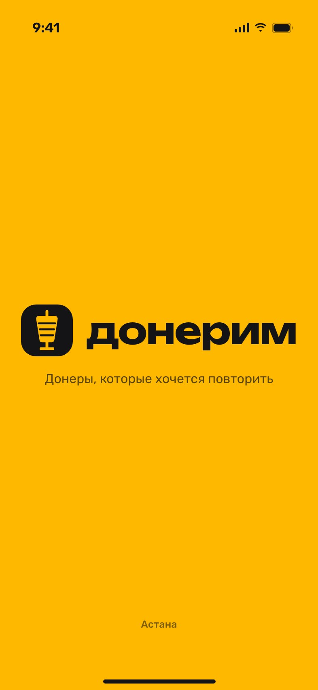
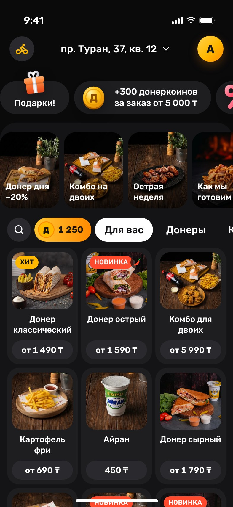
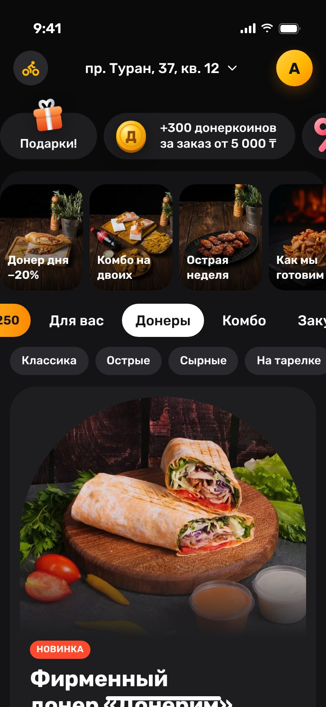
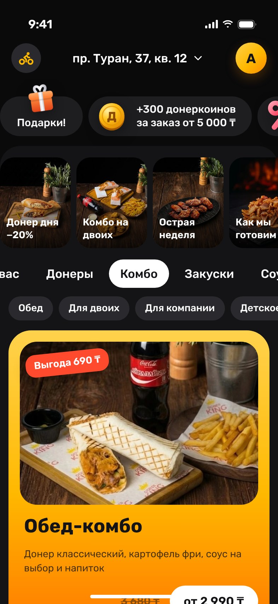
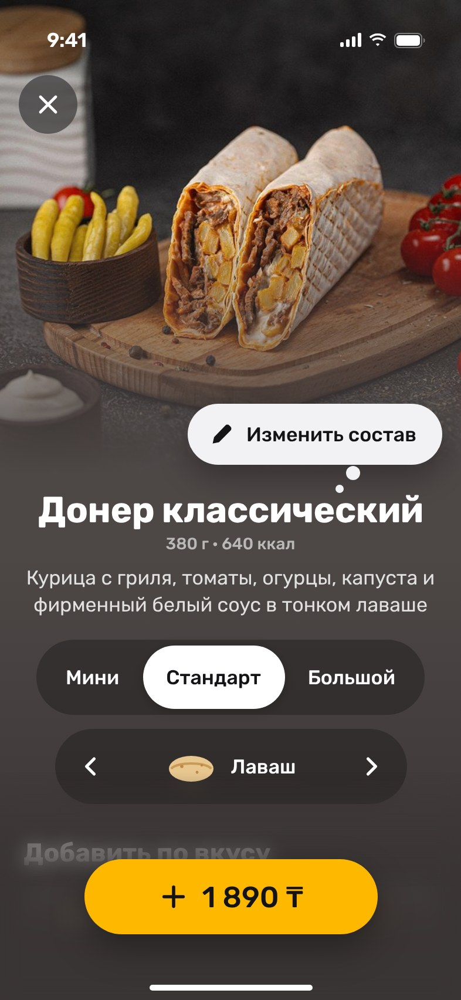
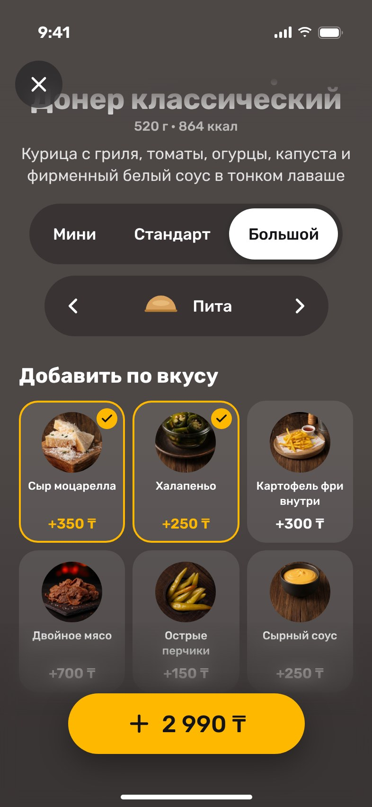
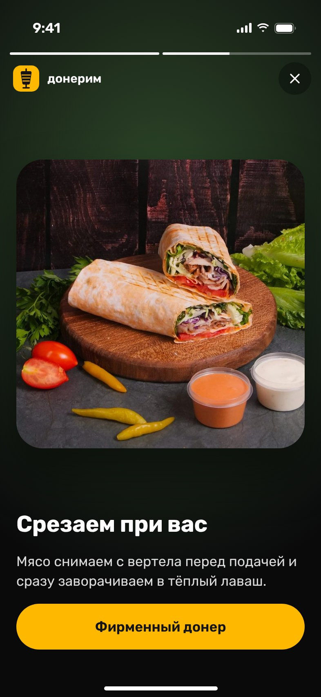
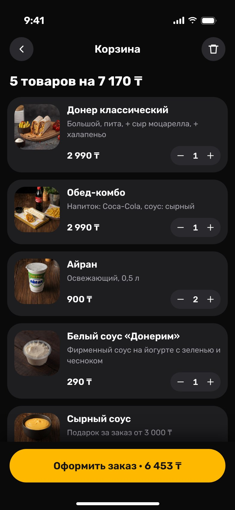
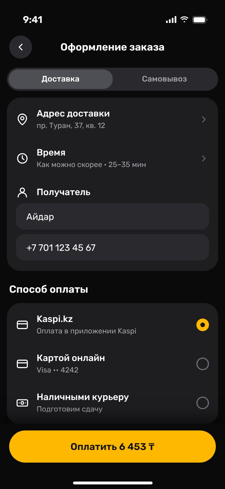
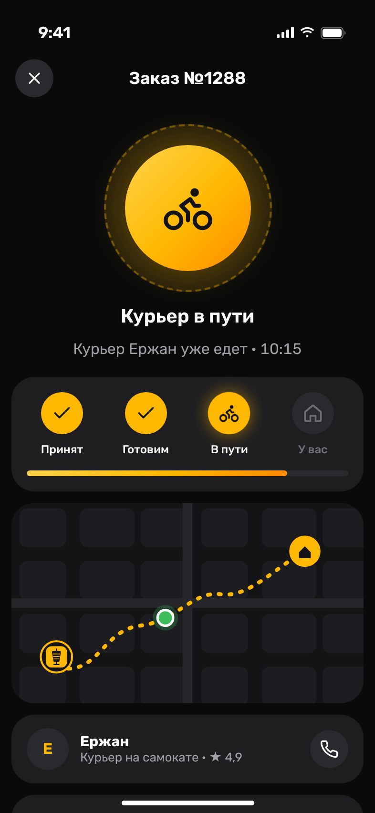
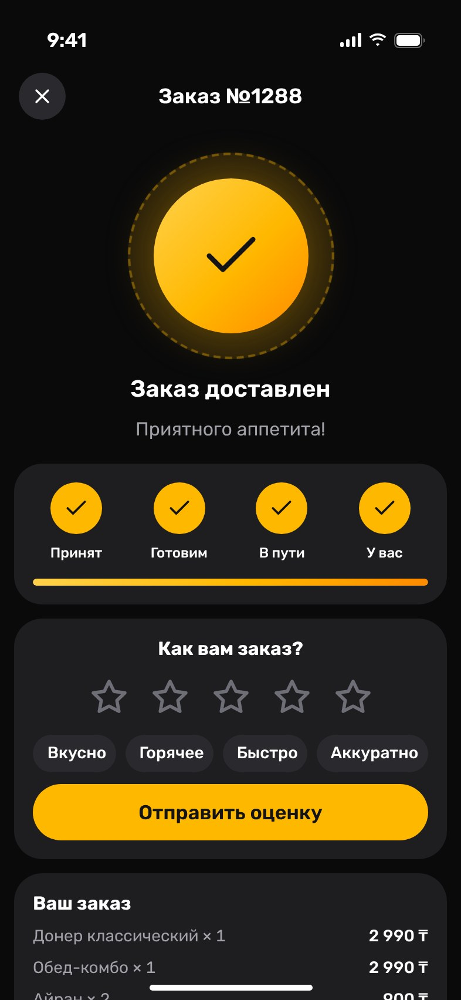
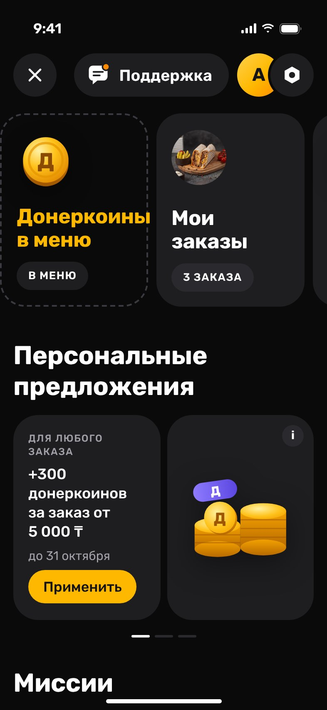
Шафрановый жёлтый — кнопки и бонусы, чили — новинки и острое.
Вертел с донером. Название и знак временные.